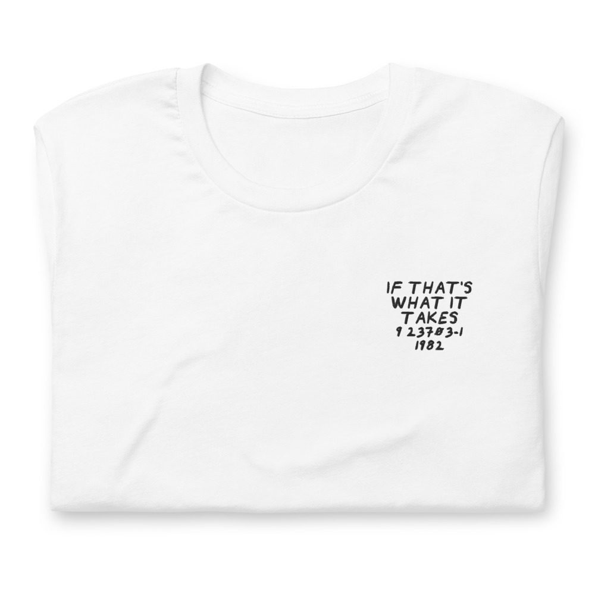
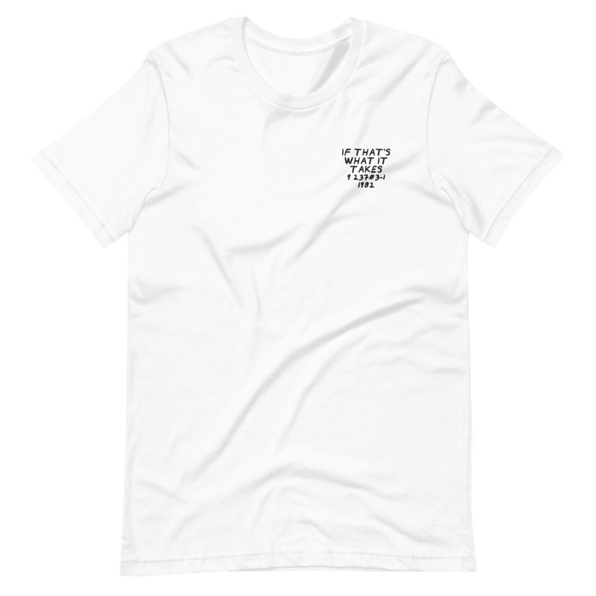

Michael McDonald – If That’s What It Takes
Rough cover.
LP · Warner Bros. 9 23703-1 · 1982
Ungraded, checked before it ships
Comes with its own shirt: a white tee embroidered on the chest with its title, catalog number and year in my handwriting. Pick a size at checkout. It’s made for you and ships on its own.


Buy $52
Play a track
Side 1
- Playin’ By The Rules4:55
- I Keep Forgettin’ (Every Time You’re Near)3:39
- Love Lies3:21
- I Gotta Try3:53
- I Can Let Go Now2:54
Side 2
- That’s Why4:24
- If That’s What It Takes4:17
- No Such Luck3:44
- Losin’ End4:11
- Believe In It4:41
Synthesizer
Michael Boddicker, Michael McDonald
Bass
Willie Weeks, Louis Johnson, Mike Porcaro
Drums
Steve Gadd, Jeff Porcaro
Guitar
Dean Parks, Steve Lukather, Robben Ford
Percussion
Bobby LaKind, Lenny Castro, Paulinho Da Costa, Ted Templeman
Piano
Greg Phillinganes, Michael McDonald
Saxophone
Edgar Winter, Tom Scott
Soloist
Edgar Winter, Robben Ford, Tom Scott
Backing Vocals
Ed Sanford, Michael McDonald, Maureen McDonald, Kenny Loggins, Amy Holland, Brenda Russell, Christopher Cross, Kathy Walker
Electric Piano
Michael McDonald, Greg Phillinganes, Michael Omartian
Clavinet, Organ
Greg Phillinganes
Alto Saxophone
Edgar Winter
Lyricon
Tom Scott
Produced by Lenny Waronker, Ted Templeman